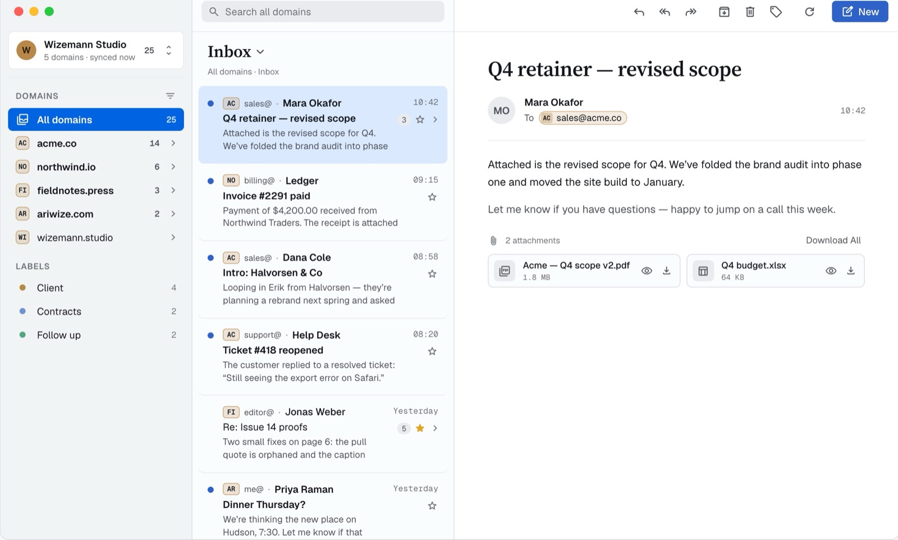
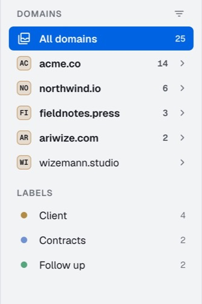
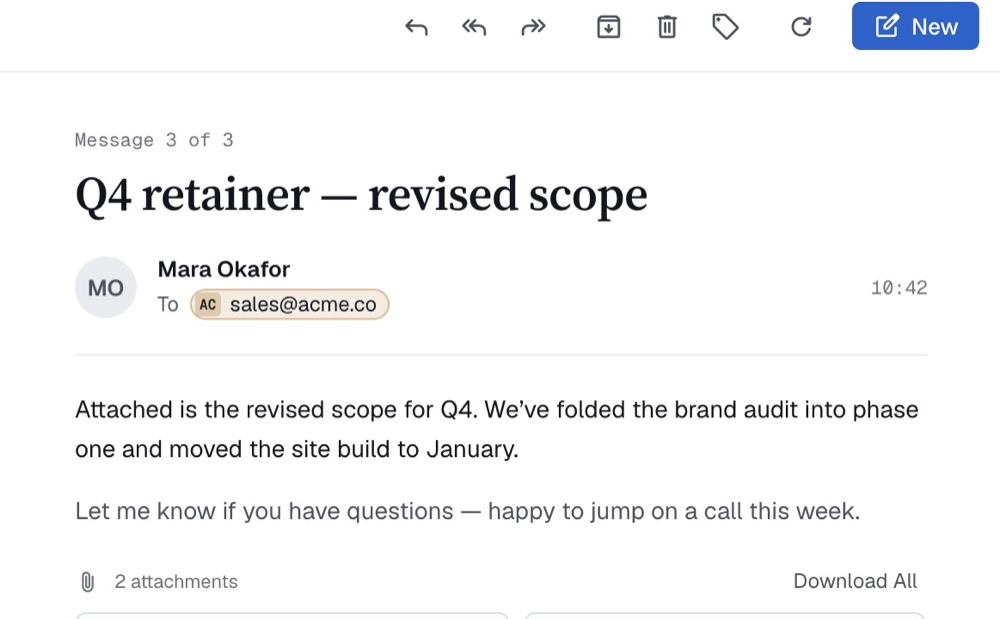
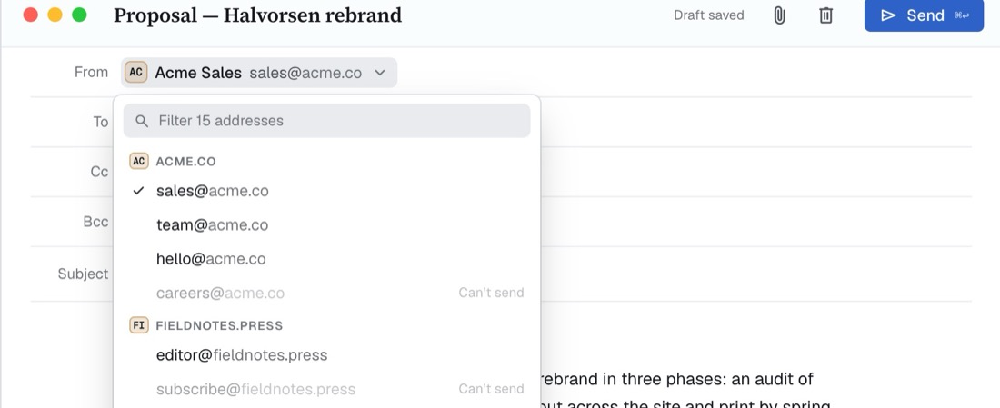
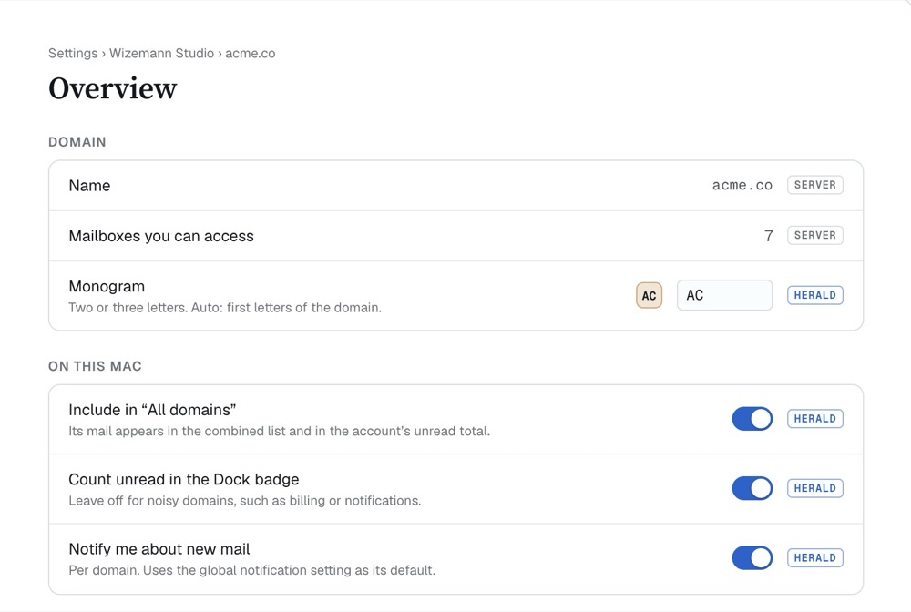

Every domain, every shared mailbox, one quiet Mac window.
Herald is a native macOS client for HQBase, the self-hosted shared-mailbox workspace. It is built for triage: scope to a domain or a mailbox, read the thread, reply from the right address, move on.
Signed and notarized by Apple. Updates itself via Sparkle.

What it is — and isn't
It is
A native SwiftUI app for Mac, fast and keyboard-friendly.
A client for the HQBase Mail API. Your server stays the system of record; Herald keeps a local cache it can rebuild.
Multi-account: several HQBase workspaces side by side.
It isn't
Affiliated with or endorsed by the HQBase project. It's an independent, community-built client.
A general email app. No IMAP, POP or Gmail — HQBase only.
A hosted service. You need your own HQBase server.
Requires a self-hosted HQBase server, version 1.3.4 or newer, and macOS 15 Sequoia or later.
Built for triage
Domains first
The sidebar drills from account to domain to mailbox to folder. “All domains” shows everything, with a small badge on each row so you always know which address a message came to. Unread counts per domain, workspace labels underneath.

Threads that read well
Open a conversation and it drills in right in the list, newest first. The reading pane is set in a calm serif and sans pairing, with reply, reply all, forward, archive and labels one click away.

Reply from the right address
The From picker groups every address you can send from by domain, filters as you type, and marks the ones you can't send from. Signatures follow the mailbox. Drafts save as you go.

Attachments, handled
Every attachment is a card: Quick Look it with a click, download one or all. Drag files into compose to attach them, and see upload progress before you send.
Choose which domains count toward the Dock badge, which ones notify, and which appear in “All domains”. Server facts and Herald-only preferences are labelled so you know what lives where.

Private by default
Herald talks only to your HQBase server. Your mail, contacts and credentials never leave it; sign-in tokens live in your Mac's Keychain.
Herald sends a small amount of anonymous usage data (app version, macOS version, which features are used) to help decide what to build next. It contains no mail, no addresses and no account details, and you can turn it off at any time in Settings › Privacy. The complete list of events is in the source: UsageEvent.swift.